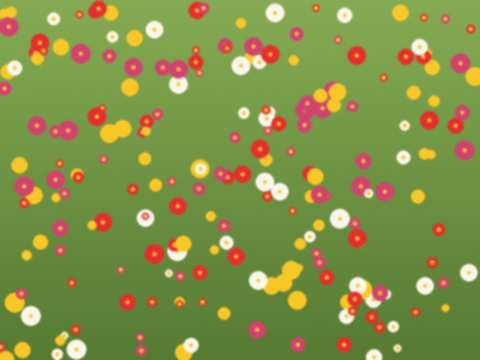
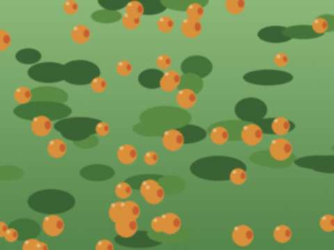

Archive for the ‘Notes’ Category14 September 2013 This is Cholpon. Our grandfather Jumabai Sydykov died on 11 September, at home, in his 80th year. He was buried the next day beside his father, under the apricot tree hill.
He asked that the blog stay open, so that the poems are not lost with the notebook. Thank you to everyone who read him and wrote to him. 28 April 2013 My hands do not hold the komuz like before. I told my students on Wednesday: this is the last lesson. The girl with the loaf of bread (now fifteen) asked: "Ata, who will play the first string?" I said, "You." She did not answer. She played it.
We drank tea. The father came to pick her up and I told him: she plays better than I did at her age. He said: of course, she has a better teacher. I said, you are polite. He said, no, I am only telling you who it was. 30 December 2012 Eleven grandchildren came, and three great-grandchildren. The house was too small and the dog was too happy. Cholpon says there are 900 readers of this blog in six years. I said: that is one aitysh crowd. Good. 13 May 2012 In May 1951 I wrote my first song, for a girl who didn't know my name. I was seventeen. Sixty-one years later I know the song, I know the girl's name, and I know why she didn't answer: she couldn't read. She is my wife. She learned to read from my letters.
Cholpon says it's the best thing I have said on this page. I said, I said it only because I'm old. 19 June 2011  The meadow behind the beekeeper's house, June.My friend keeps bees on the other side of the hill. His father and I were boys together; we stole apples together and we were punished together. Now the son keeps the bees, and the friendship came with the hives. He says bees are like akyns: they all sing at once and the honey is the result.
On Sunday I went to taste this year's honey. Every year he says: "This year it is better," and every year he is right. Linden and clover, a little thyme. I brought a jar home. The dog sat in front of it for an hour. 6 March 2011 My family gave me a telephone. It is small and grey and it plays a tune when someone calls. I do not like the tune. It is not a tune, it is a sneeze. Cholpon changed it to a komuz, but the komuz sounds like a toy.
Last week it rang in the middle of the aitysh rehearsal. I answered. It was my grandson, he asked: "Grandfather, can you hear me?" I said: "Of course I can, I am three metres from you." It was a different grandson, in Talas. I will never understand. 20 June 2010 The district held an aitysh in the square by the House of Culture, the first in eleven years. Two young akyns, a boy from Kyzyl-Adyr and a girl from the hill villages, improvised against each other for an hour. The girl won. The boy was very good also, but the girl made the district head laugh and then made him go red, in the same verse. That is the art.
They asked me to be in the jury. I gave the girl ten and the boy nine and a half. Then I went home and could not sleep from happiness.
 The square before the aitysh. The square before the aitysh.7 March 2010 On 1 September 1962 I became the director of the district House of Culture. I was twenty-eight and I owned one suit. The building had a stage, forty broken chairs and a portrait of a man with a moustache on the wall of the hall. The first thing I did was to ask the caretaker to open the windows. He said: "Director, it is winter." I said: "Yes, but it smells of a funeral."
By spring we had an ensemble of twelve, a children's group, and a theatre circle. I stayed thirty-one years. The chairs we replaced one by one, as the budget allowed. The portrait stayed. 4 October 2009 Last week a girl came to my house, eleven years old, with her father. She wants to learn the komuz. In my day only the boys played, the girls sang or danced. The father said he does not mind, he hears she has talent. She does. She held the komuz like a loaf of bread, with both arms, and played the first line of the "Ak Kalpak" song, right the first time.
I said: you will come on Wednesdays after school. Bring bread for the old man. Her father said, "And for the teacher's dog also?" Yes, also for the dog. 23 July 2009 Thirty-six years ago tonight. I was director of the House of Culture then, thirty-nine years old. Three days after the mud they brought the survivors to our district, to the school sports hall, and I took the komuz players there. Not to sing. We did not know what to do. We sat. An old woman asked someone to play, "the one that goes on the first string". We played it. Nobody spoke. The woman cried and said thank you.
I have never written a song about Sary-Say. I wrote one line only, in 1974, and I still have it: "The river knows the way, the people don't." I do not know how it continues. 31 August 2008  Apricot wood drying behind the house. Two years until it is ready.The body of the komuz is cut from one piece, a log of apricot or walnut, hollowed with a small adze. Never glued, never joined. The neck and the body are one piece, like a person. The old masters dried the wood for three years in the shade, "so that it forgets the tree and remembers the song".
I cannot make one now, my hands are not steady. A young man in Kyzyl-Adyr makes them and sells them at the bazaar for 60 som, and I tell him that the price is a shame, and he does not listen. 24 June 2007 Grandfather is well and the family is well. For some weeks we did not come to the Internet, the road was closed, and the notebook was with us in the cellar. He writes at night, with a candle, and in the morning he says: "Do not type that, it is a bad poem." So I have nothing to type. In a few days I hope there will be something.
Thank you to those who wrote asking. He read all your letters aloud to the dog. 17 December 2006 Collected over many years. I write them as I heard them:
- "A guest in the house is a guest of God, but only for three days."
- "The dog barks, the caravan goes on. But the dog has to bark."
- "Do not praise the road before the evening."
- "A word is not a bird, but it also does not come back."
Cholpon adds: and "Eat first, then you will understand the poem better". This one is grandfather's own. 26 November 2006 Some readers ask. The aitysh is a contest of two akyns who sing at each other with the komuz or without. One asks, the other answers, in verse, at once, and the verse must rhyme, and the answer must be both polite and sharp. The people in the hall laugh in the right places or they are not people.
The oldest rule: you do not make fun of the poor, of a mother or of a guest. The second rule: everything else is permitted. 27 August 2006 My teacher of the komuz was blind Asanbek, who played at the House of Culture before me. He tuned by the sound of the river. When they built the new reservoir he said the river now plays in a different key, and he retuned all his songs. I still play them in his key.
 The reservoir in August. Cholpon took it from the bus. The reservoir in August. Cholpon took it from the bus.11 June 2006 The komuz has three strings and the people who do not play it think this is simple. My teacher said: three strings, three worlds. The first for the earth, the second for the animal, the third for the man. The melody walks from one to the other and then goes home to the first. Every song, even the sad one.
If you want to understand an old song, ask which string it ends on. 2 April 2006 Assalamu aleikum, readers. My granddaughter says now there are people in America who can read what an old man from the Kara-Buura writes. I don't believe her, but let it be.
I have written songs since 1951. The best ones were sung at weddings and forgotten by morning, as it should be. The ones here are the ones that stayed in the notebook. |